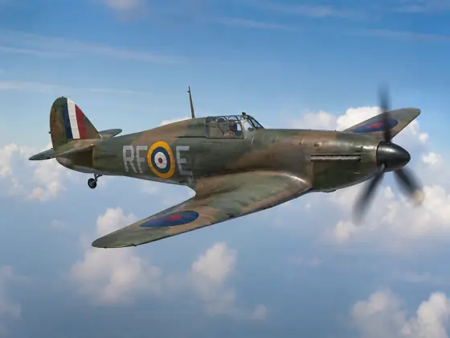

Yak-1 operations · 1940–1945
The Yak-1 was the foundation of the Yakovlev fighter family and one of the most important Soviet fighters of the early Eastern Front. It served in the desperate 1941–42 period, over Moscow and Stalingrad, then evolved into the improved Yak-1B. A good Yak-1 build starts with the exact route: early 1941 Yak-1, Moscow/Stalingrad VVS aircraft, winter whitewash, Yak-1B, Lydia Litvyak/female fighter regiment subject or survivor/reference build.

Role & strengths
- Soviet inline-engine fighter and foundation of the Yak fighter family
- Moscow, Stalingrad, Kuban, Kursk, Guards, female fighter regiment and winter whitewash routes
- Klimov M-105 inline nose, 20 mm cannon, machine guns, light airframe and Yak-1B canopy changes
- AMT green/black over blue, grey-grey late route, red stars, tactical numbers and winter whitewash options
- Exhaust staining, oil streaks, chipped wing roots, rough-field dust/mud and field repair patches
Key theatres
- 1941 VVS and Moscow defence route
- Stalingrad, Kuban and Kursk Yak-1/Yak-1B routes
- Lydia Litvyak / female fighter regiment route
- Winter whitewash and survivor-reference routes
Specification Yak-1B
Survivor/reference today

Yak-1 references rely on period photos, restorations and museum aircraft. Use them for cockpit, canopy, landing gear and oil cooler checks, but verify wartime camouflage and tactical markings separately.
View referencesTimeline highlights
Build this Yak-1 as…
Pick variant and pilot/unit first. Early Yak-1, Yak-1B, winter whitewash and famous pilot subjects need different canopy, markings and weathering.
Aircraft identity
Early Yak-1 and Yak-1B differ visually. Check canopy, armament, radio mast, oil cooler and tactical markings.
Lydia Litvyak and female fighter regiment subjects need careful marking checks. Do not rely on generic profile art alone.
Paint scheme cards
Core early Yak-1 route with red stars and rough-field weathering.
Later route with improved canopy and different tactical-number options.
Winter route with worn whitewash, exposed camouflage and muddy/snowy fields.
Weather inline exhausts, belly oil, wing roots, tyres and repair patches logically.
Campaign cards
Early route with urgent VVS conditions, green/black camouflage and winter options.
Yak-1/Yak-1B route with high sortie tempo, oil, dust and rough-field wear.
Famous-pilot route where tactical numbers and markings need exact checking.
Whitewash route with streaking, exhaust and exposed camouflage.
Build difficulty and related guides
Medium. Clean shape, but early/Yak-1B differences and markings need checking.
Medium-high. Canopy and equipment differences can make or break the subject.
Medium-high. Soviet frontline wear needs layering, not random chipping.
Yakovlev Yak-1 VVS fighter regiments
Sortable Yak-1 cards covering Moscow, Stalingrad, Kuban/Kursk, Lydia Litvyak/female aces, winter VVS and survivor/reference routes.
Yak-1 operating map
Airfield info
Click a marker to show linked Yak-1 unit cards and modelling notes.
Campaign timeline
Survivors
Books and reference sources
Yak-1 build guide
Yak-1 videos, photos and archive material
Media replaces the old separate walkaround tab: cockpit, exhaust, undercarriage, markings, survivor references, archive imagery and video cards are grouped here.